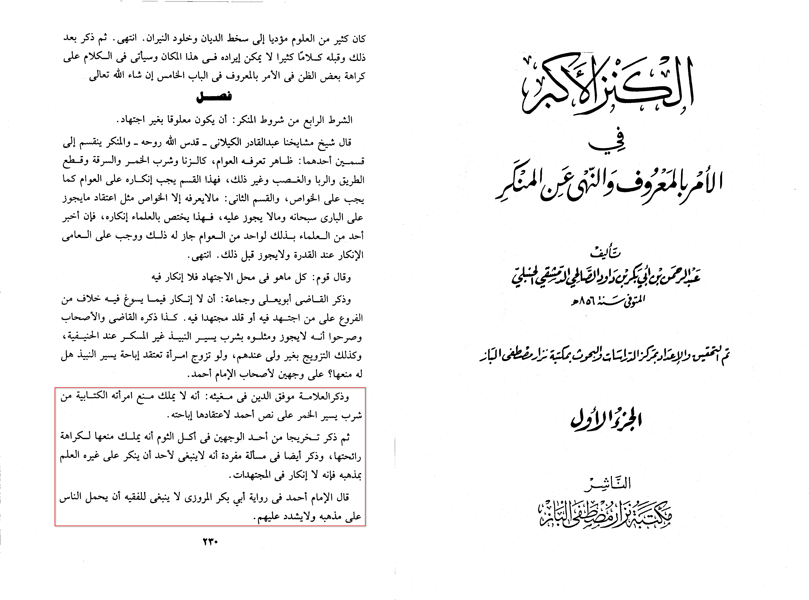
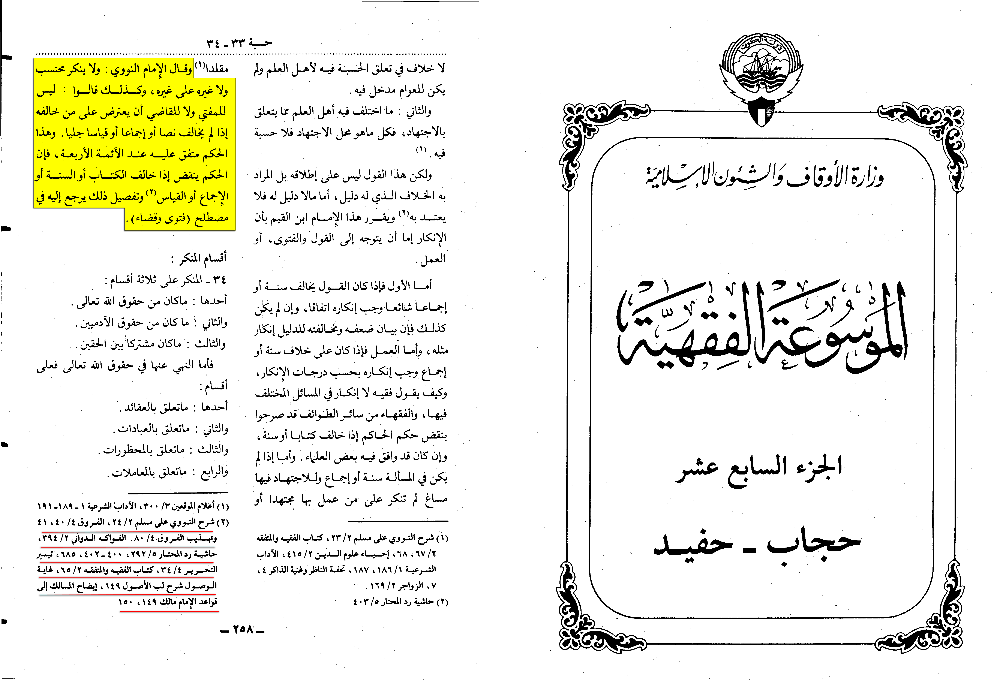

"As we have stated before in this server we follow mostly hanafi/thawri/kufi view then the maliki view then less likely the hanbali
view. Some people criticize us for using their opinions when they’re a minority however do their claims of “forbidding evil” stand up
with what the scholars have said?" (Disclaimer from the discord)
Ibn Dāwūd al-ḥanbalī (d. 856 AH) states:
« Ibn Mawfuq ad-dīn mentioned that he doesn’t have the right to stop his Christian wife from drinking a little bit of wine
as she is on its permissibility from imam Aḥmad…
he also mentioned that it isn’t permissible for anybody to object against someone working from his maḏhab (school of thought)
because there is no forbidding evil in mujtahidat, Aḥmad said that it isn’t suitable for the jurist to force people on his madhab
and not to be extreme with them. »
•📖 {Al-Kanz Al-Akbar | 1/230}

Al Mausu'ah Al Fiqhiyah Al Kuwaitiyah states:
The Imam an-Nawawī said: "No one, whether it be a muhtasib or anyone else, should object to another without a clear text, consensus, or clear analogy.
This ruling is agreed upon by the four Imams.
The ruling becomes invalid if it contradicts the Quran, Sunnah, consensus, or clear analogy."
•📖 {Al Mausu'ah Al Fiqhiyah | 17/258}

In the footnote it quotes the relied upon jurists books of the 4 schools of thought.
This is an endless story agreed upon by everyone the only condition is it to be a valid ikhtilaf that we respect here.
Again if you object by saying “it is a clear text” who are you to decide you’re not a scholar.
Here's a list of Shāfi'ī scholars on NOT condemning acts that are differed upon (unless the one doing it sees it harām or Makrūh or Khilāf al-Awlā (such as a Hanafī doing Raf' al-Yadayn or playing chess, then I should advise him as a Shafi'i if it's Makrūh according to him, and stop him if it's Harām according to him):
al-Suyūtī, al-Zarkashī, Ibn al-Rif'ah, Ibn al-Mulaqqin, al-Isnawī, al-Nawawī, Ibn Daqīq al-'Īd, al-Damīrī, al-Ramlī, al-Rāfi'ī, al-'Irāqī,
al-Ramlī al-Kabīr. (Quotes list in order mentioned here)
"One does not condemn [someone for doing something] in which the [valid] difference of opinion exists in it,
rather one condems [someone for doing something] regarding which unanimous agreement (Ijmā') exists."
https://app.turath.io/book/21719?page=156https://app.turath.io/book/21592?page=504https://app.turath.io/book/14325?page=1097https://app.turath.io/book/20561?page=1199https://app.turath.io/book/14580?page=3983https://app.turath.io/book/1711?page=267https://app.turath.io/book/11244?page=103https://app.turath.io/book/13783?page=4495https://app.turath.io/book/3565?page=3466https://app.turath.io/book/13577?page=4269https://app.turath.io/book/127671?page=205https://app.turath.io/book/11468?page=183